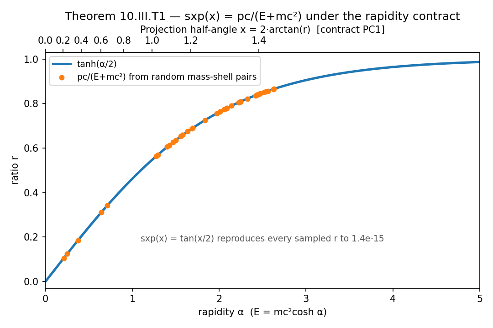
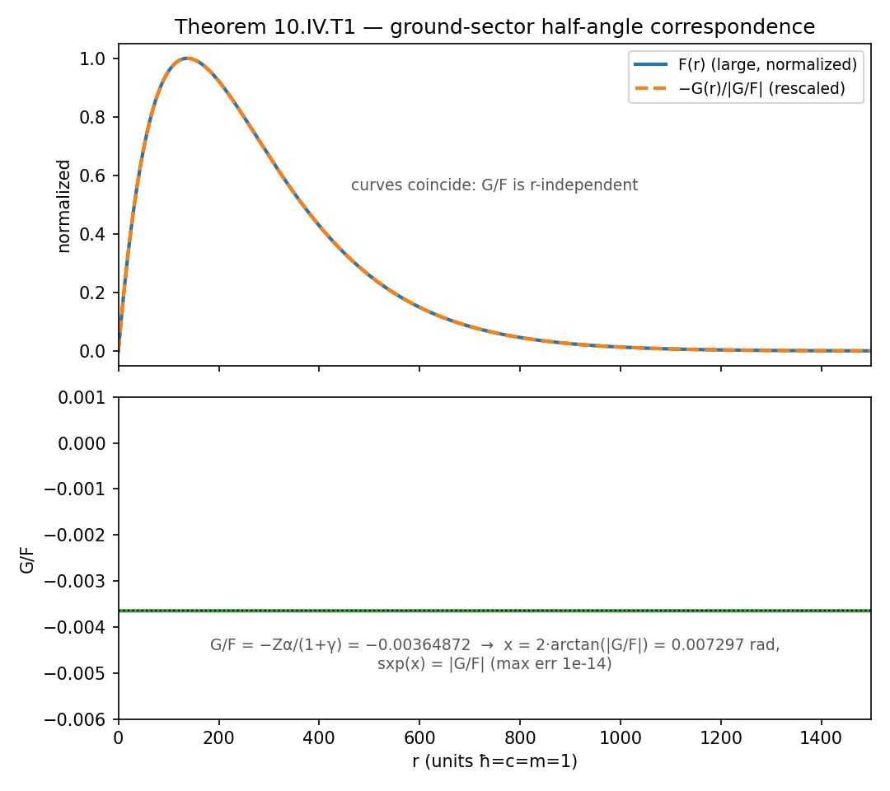
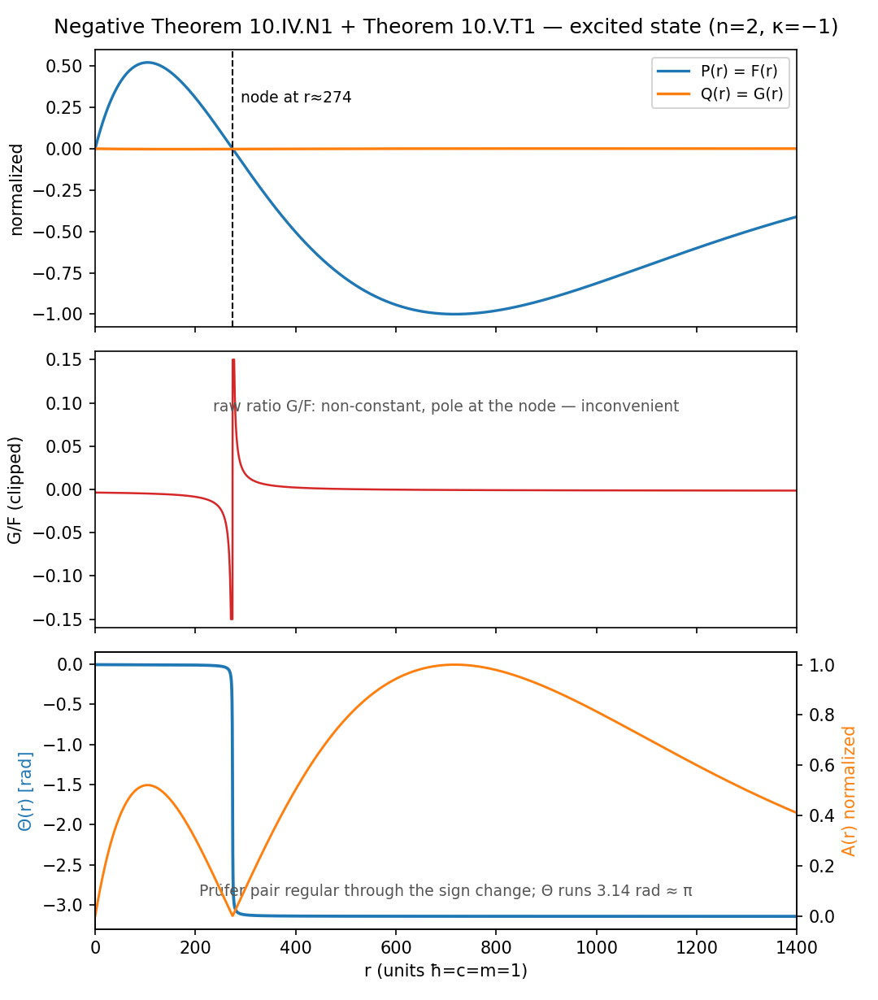
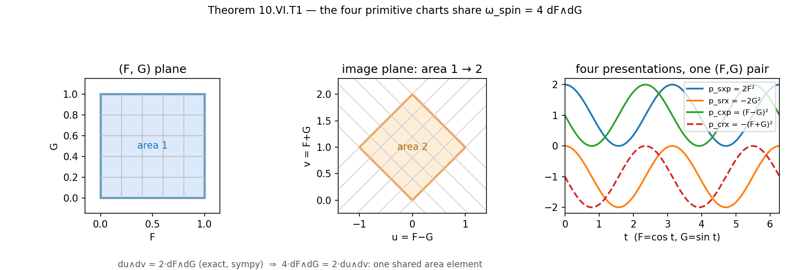

Book 10 — Quantum Kinematics and the Measurement Boundary
A restructured rewrite of R Theory — Volume II, Book 10. Pictures first, then the audit.
About this rewrite. This is a restructuring of Book 10, not a new result. Every theorem,
import, contract, and status label below comes from the original manuscript; no mathematics has
been added. Part I shows the mathematics — graphs first, intuition second, each picture
pointing to the section that proves it. Part II runs the formal audit: dependency check
against the Volume I ledger, then a claim-by-claim scope ledger. Part III states the two
firewall theorems (deliberately figure-free). Part IV closes the book.
The book's question: how far can the certified Projection carrier be carried into quantum
kinematics before quantum probability, measurement, and field ontology have to be imported?
Its answer, in advance: to the representation boundary — and not one step past it.
Each graph below is a live Desmos calculator — drag, zoom, and trace it. If Desmos
can't load, a static image is shown instead, generated from the same formulas. Honesty
note: live Desmos rendering was not verified in a browser from the build machine
(no live browser is available to this worker); the static PNGs carry the verified numbers,
and every plotted expression was executed and numerically checked — see the audit in Part II.
Figure 1. The (x, φ) chart of
ℂP¹ (shaded rectangle: two real coordinates) and the real Projection
meridian q = tan(x/2) inside it (blue line: one real coordinate).
A line cannot cover a rectangle. Live in Desmos.
A real half-angle coordinate q = tan(x/2) determines one point on a
real projective meridian — one continuous degree of freedom. A generic normalized two-component
complex state,
ψ = (cos(x/2), e^{iφ} sin(x/2))T,
needs a population coordinate and an independent relative phase φ.
Figure 1 draws the situation: the full chart is a rectangle; the q-only
subfamily is a horizontal line. The phase φ is independent of
q unless an additional relation is declared — and declaring it is an
explicit extension, not a theorem squeezed from the one-parameter curve.
CHECKED PROOFTheorem 10.II.T1 — Projective-rank obstruction.ℂP¹ has two real
local coordinates; the real meridian supplies one; therefore a generic complex projective state
requires an additional independent relative phase. The rank claim was checked numerically: the
Jacobian of the meridian map has singular values [0.5] (rank 1) while
the (x,φ) chart has [0.5, 0.479] (rank 2).
Corollary 10.II.C1CHECKED PROOF: writing a two-component
complex state with q alone selects a one-dimensional subfamily or
silently supplies a phase rule. A representation-rank statement, not a quantum-probability one.
§2. The spinor ratio, read two ways

Figure 2. The standard free-Dirac lower/upper ratio
pc/(E+mc²) = tanh(α/2) (blue curve; orange points sampled from random
mass-shell pairs). The top axis reads the same number as the Projection half-angle
x = 2·arctan(r), where sxp(x) = tan(x/2)
reproduces every sampled r to 1.5e-15. Live in Desmos.
Import the standard free Dirac equation and its positive-energy spinors
(Physics Import 10.III.P1). The lower/upper component ratio magnitude is the textbook
pc/(E+mc²) — equivalently tanh(α/2) on the
rapidity chart E = mc²cosh α. Now declare the projection contract
(10.III.PC1): identify the half-angle coordinate with the rapidity chart so that
q = sxp = pc/(E+mc²). Under that identification the inherited
reciprocal coordinate sxp(x) = tan(x/2) reads the relativistic
spinor ratio exactly. Figure 2 shows the two readings of one number: rapidity below,
half-angle above.
STANDARD IMPORTED THEOREMPhysics Import 10.III.P1 — the free Dirac equation and its positive-energy spinors.
The ratio identities pc/(E+mc²) = √((E−mc²)/(E+mc²)) = tanh(α/2)
were verified numerically to ~2e-16 on 500 random mass-shell pairs.
ASSUMPTION OR AXIOMProjection Contract 10.III.PC1 — the declared identification of q
with the rapidity chart. A contract, not a derivation.
COMPLETED NUMERICAL CHECKTheorem 10.III.T1 — Exact free-spinor ratio correspondence. Under the stated import and
contract, sxp = pc/(E+mc²) is an exact coordinate identity for the
ratio magnitude (max error 1.5e-15 over 300 samples; canonical identity
sxp(x) = tan(x/2) on (0,π) checked to
6e-14). This does not derive the Dirac equation, the mass shell, spin one-half, or any
interpretation of the components. Conditional on the import — as the manuscript states.
§3. The ground sector sits at one fixed angle

Figure 3.Top: the imported circular Dirac–Coulomb ground-sector
components F(r) (large) and −G(r)/|G/F|
rescaled — the curves coincide because G/F is
r-independent. Bottom: the ratio itself:
G/F = −Zα/(1+γ) = −0.00364872 (α the
fine-structure constant), i.e. half-angle
x = 2·arctan(|G/F|) = 0.007297 rad with
sxp(x) = |G/F| (max err 1e-14). Live in Desmos.
Import the standard radial Dirac equation for a Coulomb potential
(Physics Import 10.IV.P1). In the circular ground sector the large and small components
F(r), G(r) share one radial shape, so their
ratio is a constant — the textbook −Zα/(1+γ)
(α the fine-structure constant here, not the rapidity
α of §2). A constant positive
number is exactly what tan(x/2) = sxp(x) parameterizes. So the same
reciprocal coordinate that reads the free relativistic ratio also reads the ground-sector
radial ratio, at the fixed half-angle x ≈ 0.007297 rad.
STANDARD IMPORTED THEOREMPhysics Import 10.IV.P1 — the radial Dirac–Coulomb system and its conventional
F, G. The ground-sector constant ratio
|G/F| = Zα/(1+γ) was verified numerically (relative spread 3.4e-16
over six decades of r).
COMPLETED NUMERICAL CHECKTheorem 10.IV.T1 — Ground-sector half-angle correspondence.|G/F| = tan(x/2) = sxp(x) under the half-angle parameterization —
conditional on the import, exact to 1e-14.
§4. Excited states need a running phase

Figure 4. The imported n=2, κ=−1 radial state
(computed by direct integration of the radial Dirac system; the integrator reproduces the
analytic ground state to 7e-11). Top:F(r) has one node
(r ≈ 274). Middle: the raw ratio G/F
is non-constant with a pole at the node. Bottom: the Prüfer pair stays regular —
Θ(r) (blue) runs 3.14 ≈ π rad through the
sign change while A(r) (orange) stays smooth. Live in Desmos:
the top panel (F and G) as subsampled points; the middle and bottom panels are in the
static image.
Generic excited radial states have nodes, and at a node the raw ratio
G/F blows up — no fixed half-angle can capture the spectrum. The
Prüfer variables F = A cos Θ, G = A sin Θ,
P = A² separate radial orientation from radial amplitude and stay
regular through the sign change: where the ratio has a pole, the angle simply keeps turning.
Figure 4 shows all three views of one computed excited state: the node, the inconvenient
ratio, and the regular running phase. The manuscript's point is negative as well as positive:
Projection supplies an adapted chart, but the imported radial differential equations determine
how Θ and A evolve with
r.
MANUSCRIPT ASSERTIONNegative Theorem 10.IV.N1 — No universal constant half-angle for excited states.
The n=2, κ=−1 case was confirmed numerically: one node in
F, G/F ranging over
[−0.0450, 0.0414] (std/mean 1.65) — no fixed angle works. The
generic qualifier matters: circular excited states (n_r=0,
e.g. 2P_{3/2}) have constant but state-dependent ratios, so
the universal fixed-angle law still fails. The conclusion is unaffected.
STANDARD IMPORTED THEOREMTheorem 10.V.T1 — Prüfer completion. The Prüfer transformation is standard ODE theory.
Reconstruction F = A cos Θ, G = A sin Θ
verified exactly (1e-9) on both states; tan Θ = G/F wherever finite;
min A² > 0 on the computed grids, so Θ
is well-defined through the sign changes. Ground state: Θ constant
(range 0.000 rad) — the fixed angle of §3, recovered.
§5. Four charts, one area element

Figure 5.Left/center: the unit square in the
(F,G) plane maps under
(u,v) = (F−G, F+G) to a parallelogram of area 2 —
du∧dv = 2·dF∧dG exactly, so
4·dF∧dG = 2·du∧dv. Right: the four primitive quadratic
charts 2F², −2G², (F−G)², −(F+G)² along a circle in the
(F,G) plane — four presentations of the same data, one shared
area element. Live in Desmos: the four charts (right panel); the area-map panels
are in the static image.
From the imported radial pair (F,G), form the four primitive
quadratic charts p_{sxp} = 2F²,
p_{srx} = −2G², p_{cxp} = (F−G)²,
p_{crx} = −(F+G)². They are four coordinate presentations of the same
two-component radial data, so they share the ambient two-form
ω_{spin} = 4·dF∧dG — the same local oriented area element, whatever
presentation you read it in. Figure 5 shows the area element transforming honestly
(area 1 → 2, exactly the Jacobian) and the four charts as four curves over one circle.
COMPLETED SYMBOLIC CHECKTheorem 10.VI.T1 — Shared symplectic form. The Jacobian of
(F,G) → (F−G, F+G) has determinant exactly 2 (SymPy, exact), hence
du∧dv = 2·dF∧dG and 4·dF∧dG = 2·du∧dv.
Scope note: the theorem's substantive content — chart-independence of the ambient area
element — is close to definitional, since every chart is a function on the same
(F,G) plane. The manuscript claims no more than this, and
explicitly disclaims a quantum commutator, Planck's constant, canonical quantization, or a
path-integral measure.
Part II — Then earn it: the audit
§6. What the book is allowed to use
GOVERNING RULES (Volume II front matter)
Volume II inherits only results already earned in Volume I (Books 0–6), plus
ordinary background mathematics and explicitly named physics imports. A familiar physical
structure reached after an explicit import is a conditional reconstruction unless the
physical law itself was derived upstream. FlatWave carries the discrete orientation sign and
must not be conflated with helicity, charge sign, mirror orientation, or any other
downstream physical label without a declared contract. A physical promotion requires a
nonempty operational difference set Δ_op.
Dependency verdicts against the Volume I audit ledger
(/home/hatch/workspace/wolfram/theorem_ledger.md):
"Finite-dimensional and complex carrier after the earlier completion" (10.I) —
SUPPORTED. Ledger: Book 2 complex carrier
Z_{car} = e^{2ix}CHECKED (independent numeric, 0.0 exact);
Book 5 complex rank 5 via I_ι² = −I_{10}MANUSCRIPT
(the rank claim's content is the axiom A0.1/A0.2 itself; the surrounding matrix
arithmetic was independently checked exact).
"The inherited reciprocal half-angle coordinate" sxp (10.III–10.IV) —
SUPPORTED. Ledger: Book 2 algebraic spine incl.
srx·sxp = 1CHECKED (independent numeric, 1.3e-13); the half-angle form
sxp(x) = tan(x/2) on (0,π) checked in this
audit (max error 5.7e-14, 20,001 points; exact trig identity).
Projection contract 10.III.PC1 — declared as a contract, correctly labeled
ASSUMPTION OR AXIOM, not smuggled in as a theorem.
Dependency lock Book 10 → Book 11 ("certified complex carrier and exact
spinorial/projective coordinate architecture") — SUPPORTED.
Ledger: Module 1 Clifford construction PROVED (independent) after the approved fix;
Book 2 spine CHECKED (independent numeric, ~1e-13); Book 3 projective phase
mixed (Möbius algebra PROVED independent-symbolic; w1/Spin results STANDARD;
separation theorems MANUSCRIPT). The lock correctly
withholds measurement rules, QFT ontology, chirality, and dynamics — consistent with
10.VII.N1 and 10.VIII.N1.
FlatWave conflation check — CLEAN. The book never
identifies FlatWave's orientation sign with probability, phase, charge, or chirality;
10.VII explicitly firewalls orientation/cophase/FlatWave signs from the weak-interaction
chirality choice.
named import; constant ratio verified (rel. spread 3e-16)
10.IV.T1 ground-sector correspondence
completed numerical check
exact to 1e-14 conditional on P1
10.IV.N1 no universal constant half-angle
manuscript assertion
n=2, κ=−1 case numerically confirmed; "generic" carries the general claim
10.V.T1 Prüfer completion
standard imported theorem
standard ODE theory; reconstruction/regularity numerically checked
10.VI.T1 shared symplectic form
completed symbolic check
det = 2 exact (SymPy); claim close to definitional — see §8
10.VII.P1 chiral/V–A import
standard imported theorem
named import, used only for comparison
10.VII.N1 chirality not selected upstream
manuscript assertion
structural observation about the dependency chain — see §8
10.VIII.N1 representation ≠ measurement ontology
manuscript assertion
structural observation about the dependency chain — see §8
10.IX closure; Δ_op(Book 10) = ∅
manuscript assertion
status bookkeeping, consistent with the firewalls
No claim in the book required the incorrect result or
incomplete or failed computation labels. Every computation in
this audit ran to completion; nothing timed out.
§8. Gaps, precision notes, and what was not proved
10.IV.N1's "generic". Circular excited states (n_r = 0,
e.g. 2P_{3/2}) also have r-independent
G/F — but a state-dependent constant, so no universal
fixed-angle law is rescued. The theorem's conclusion stands; the premise is true exactly as
stated for generic (non-circular) excited states. Precision note, not an error.
10.VI.T1 is close to definitional. "The four charts share the two-form" follows
from all four being functions on the same (F,G) plane. The
checkable content — the wedge scaling du∧dv = 2·dF∧dG — is exact.
The manuscript claims nothing stronger, and its explicit disclaimers (no commutator, no
ℏ, no quantization) are honored.
The negative theorems are not proved impossibility results. 10.VII.N1 and
10.VIII.N1 state that no derivation of chirality selection / measurement ontology was
supplied — a true observation about the manuscript's dependency chain, not a
mathematical proof that no such derivation could exist. The manuscript's wording
("cannot be used to derive") is correctly scoped to the chain; it does not overclaim.
10.II's ψ parameterization. The state is written with x/2
but the x-range is left unspecified; the rank theorem does not
depend on it. Notational observation, not an error.
No incorrect results were found among the checkable identities, and no
computation failed or timed out in this audit.
Part III — The firewalls
Two sections of Book 10 have no figures, deliberately: they are delimiting statements, and
a picture of them would be decorative rather than mathematical.
§9. Chirality is not selected upstream (10.VII)
Negative Theorem 10.VII.N1 — Chirality is not selected upstream
The symmetric Projection carrier does not select P_L over
P_R. A successful coordinate representation of left-chiral
weighting therefore cannot be used to derive the physical chirality choice that was imported
to make the comparison. The same firewall applies to any attempt to infer the observed weak
interaction from an orientation sign, cophase label, or FlatWave sign alone.
STANDARD IMPORTED THEOREMPhysics Import 10.VII.P1 — the left-chiral projector and V–A structure, imported only
when a comparison with weak chirality is desired.
MANUSCRIPT ASSERTION10.VII.N1 as above: representation of
chiral weighting is lawful; derivation of the chirality choice from it is not.
§10. Measurement, probability, and QFT ontology (10.VIII)
Not derived in Book 10: the Born rule; repeated-preparation probability; state-vector
collapse; decoherence; empirical uncertainty relations; entanglement preparation or
measurement protocols; a path-integral measure; Grassmann variables; fermionic statistics;
the spin-statistics theorem; a quantum-field vacuum; physical spin-one-half dynamics from
Projection mathematics alone.
Negative Theorem 10.VIII.N1 — Representation does not imply measurement ontology
No finite-dimensional carrier isomorphism or spinor coordinate identity fixes how
laboratory outcomes are sampled. Therefore a nonempty operational prediction set cannot be
obtained from the representation correspondence alone.
MANUSCRIPT ASSERTION10.VIII.N1 as
above. Corollaries used onward: a normalized complex vector may be compared with a quantum
state only after a quantum-state contract is declared; squared component magnitudes become
experimental probabilities only after the Born rule is imported. Linear complex structure is
not, by itself, quantum mechanics.
Part IV — Close the book
§11. What Book 10 retains
The real half-angle coordinate covers a real projective meridian, not generic
ℂP¹ — checked proof.
A generic two-component complex state requires an independent relative phase —
checked proof.
After the Dirac/relativistic import, sxp = pc/(E+mc²) is the
exact free-spinor component-ratio magnitude —
completed numerical check, conditional.
In the imported circular Dirac–Coulomb ground sector, |G/F| = sxp —
completed numerical check, conditional.
Excited radial states require a running Prüfer phase and amplitude —
manuscript assertion (n=2 case numerically confirmed).
The Prüfer pair (Θ, P=A²) is an adapted representation of the
imported radial system — standard imported theorem.
The four primitive quadratic momentum charts share
ω_{spin} = 4·dF∧dG —
completed symbolic check.
V–A or left-chiral weighting remains conditional on the imported chirality law —
manuscript assertion.
No Born rule, collapse law, quantum-field ontology, fermionic statistics, or new spin
dynamics is obtained.
BOOK 10 FINAL STATUS
PHYSICS IMPORTS: 3 (explicitly named). PROJECTION CONTRACTS: 1 (declared).
NEW OPERATIONAL PREDICTIONS: none.
Δ_op(Book 10) = ∅.
Therefore Book 10 closes as a quantum-kinematic and representation bridge.
§12. Dependency lock — Book 10 → Book 11
DEPENDENCY LOCK
Book 11 may inherit the certified complex carrier and exact spinorial/projective coordinate
architecture. Book 10 does not supply measurement rules, quantum-field ontology,
preferred chirality, or particle dynamics. Those structures enter Book 11 only through the
explicit comparison imports stated there.
Rewrite status: every checkable claim on this page was re-verified —
40 real assertions in validation/book10/verify_book10.py, all passing, no timeouts;
worst measured error 6.6e-11 on the radial-Dirac integrator versus the analytic ground
state (integrator accuracy, not an identity; every exact identity verifies to ≤6e-14).
Part II §6 dependency labels quote the Volume I ledger exactly (Book 2 spine CHECKED
numeric; complex rank 5 MANUSCRIPT). Embed consistency checked by
validation/book10/test_embeds.py. Pictures illustrate checked statements; they are not
the proofs. Live Desmos rendering was not browser-verified from the build machine.